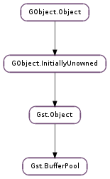

| Subclasses: | GstVideo.VideoBufferPool |
|---|
| static | config_add_option(config, option) |
| static | config_get_allocator(config, allocator, params) |
| static | config_get_option(config, index) |
| static | config_get_params(config) |
| static | config_has_option(config, option) |
| static | config_n_options(config) |
| static | config_set_allocator(config, allocator, params) |
| static | config_set_params(config, caps, size, min_buffers, max_buffers) |
| static | new() |
| acquire_buffer(params) | |
| get_config() | |
| get_options() | |
| has_option(option) | |
| is_active() | |
| release_buffer(buffer) | |
| set_active(active) | |
| set_config(config) |
None
None
| Name | Type | Access |
|---|---|---|
| flushing | int | r |
| object | Gst.Object | r |
Bases: Gst.Object
a Gst.BufferPool is an object that can be used to pre-allocate and recycle buffers of the same size and with the same properties.
A Gst.BufferPool is created with Gst.BufferPool.new ().
After the buffer is created, it needs to be configured. Gst.BufferPool.get_config () get the current configuration structure from the pool. With Gst.BufferPool.config_set_params () and Gst.BufferPool.config_set_allocator () the bufferpool parameters and allocator can be configured. Other properties can be configured in the pool depending on the pool implementation.
A bufferpool can have extra options that can be enabled with Gst.BufferPool.config_add_option (). The available options can be retrieved with Gst.BufferPool.get_options (). Some options allow for additional configuration properties to be set.
After the configuration structure has been configured, Gst.BufferPool.set_config () updates the configuration in the pool. This can fail when the configuration structure is not accepted.
After the a pool has been configured, it can be activated with Gst.BufferPool.set_active (). This will preallocate the configured resources in the pool.
When the pool is active, Gst.BufferPool.acquire_buffer () can be used to retrieve a buffer from the pool.
Buffer allocated from a bufferpool will automatically be returned to the pool with Gst.BufferPool.release_buffer () when their refcount drops to 0.
The bufferpool can be deactivated again with Gst.BufferPool.set_active (). All further Gst.BufferPool.acquire_buffer () calls will return an error. When all buffers are returned to the pool they will be freed.
Use Gst.Object.unref () to release the reference to a bufferpool. If the refcount of the pool reaches 0, the pool will be freed.
Last reviewed on 2012-03-28 (0.11.3)
| Parameters: |
|
|---|
Enabled the option in config. This will instruct the bufferpool to enable the specified option on the buffers that it allocates.
The supported options by pool can be retrieved with Gst.BufferPool.get_options ().
| Parameters: |
|
|---|---|
| Return type: |
Get the allocator and params from config.
| Parameters: |
|
|---|---|
| Returns: | a str of the option at index. |
| Return type: |
Parse an available config and get the option at index of the options API array.
| Parameters: | config (Gst.Structure) – a Gst.BufferPool configuration |
|---|---|
| Returns: | True if all parameters could be fetched. |
| Return type: | bool, caps: Gst.Caps, size: int, min_buffers: int, max_buffers: int |
Get the configuration values from config.
| Parameters: |
|
|---|---|
| Returns: | True if the options array contains option. |
| Return type: |
Check if config contains option
| Parameters: | config (Gst.Structure) – a Gst.BufferPool configuration |
|---|---|
| Returns: | the options array size as a int. |
| Return type: | int |
Retrieve the number of values currently stored in the options array of the config structure.
| Parameters: |
|
|---|
Set the allocator and params on config.
One of allocator and params can be None, but not both. When allocator is None, the default allocator of the pool will use the values in param to perform its allocation. When param is None, the pool will use the provided allocator with its default Gst.AllocationParams.
A call to Gst.BufferPool.set_config () can update the allocator and params with the values that it is able to do. Some pools are, for example, not able to operate with different allocators or cannot allocate with the values specified in params. Use Gst.BufferPool.get_config () to get the currently used values.
| Parameters: |
|
|---|
Configure config with the given parameters.
| Returns: | a new Gst.BufferPool instance |
|---|---|
| Return type: | Gst.BufferPool |
Creates a new Gst.BufferPool instance.
| Parameters: | params (Gst.BufferPoolAcquireParams or None) – parameters. |
|---|---|
| Returns: | a Gst.FlowReturn such as Gst.FlowReturn.FLUSHING when the pool is inactive. |
| Return type: | Gst.FlowReturn, buffer: Gst.Buffer |
Acquire a buffer from pool. buffer should point to a memory location that can hold a pointer to the new buffer.
params can be None or contain optional parameters to influence the allocation.
| Returns: | a copy of the current configuration of pool. use Gst.Structure.free () after usage or Gst.BufferPool.set_config (). |
|---|---|
| Return type: | Gst.Structure |
Get a copy of the current configuration of the pool. This configuration can either be modified and used for the Gst.BufferPool.set_config () call or it must be freed after usage.
| Returns: | a None terminated array of strings. |
|---|---|
| Return type: | [str] |
Get a None terminated array of string with supported bufferpool options for pool. An option would typically be enabled with Gst.BufferPool.config_add_option ().
| Parameters: | option (str) – an option |
|---|---|
| Returns: | a None terminated array of strings. |
| Return type: | bool |
Check if the bufferpool supports option.
| Returns: | True when the pool is active. |
|---|---|
| Return type: | bool |
Check if pool is active. A pool can be activated with the Gst.BufferPool.set_active () call.
| Parameters: | buffer (Gst.Buffer) – a Gst.Buffer |
|---|
Release buffer to pool. buffer should have previously been allocated from pool with Gst.BufferPool.acquire_buffer ().
This function is usually called automatically when the last ref on buffer disappears.
| Parameters: | active (bool) – the new active state |
|---|---|
| Returns: | False when the pool was not configured or when preallocation of the buffers failed. |
| Return type: | bool |
Control the active state of pool. When the pool is inactive, new calls to Gst.BufferPool.acquire_buffer () will return with Gst.FlowReturn.FLUSHING.
Activating the bufferpool will preallocate all resources in the pool based on the configuration of the pool.
Deactivating will free the resources again when there are no outstanding buffers. When there are outstanding buffers, they will be freed as soon as they are all returned to the pool.
| Parameters: | config (Gst.Structure) – a Gst.Structure |
|---|---|
| Returns: | True when the configuration could be set. |
| Return type: | bool |
Set the configuration of the pool. The pool must be inactive and all buffers allocated form this pool must be returned or else this function will do nothing and return False.
config is a Gst.Structure that contains the configuration parameters for the pool. A default and mandatory set of parameters can be configured with Gst.BufferPool.config_set_params (), Gst.BufferPool.config_set_allocator () and Gst.BufferPool.config_add_option ().
If the parameters in config can not be set exactly, this function returns False and will try to update as much state as possible. The new state can then be retrieved and refined with Gst.BufferPool.get_config ().
This function takes ownership of config.